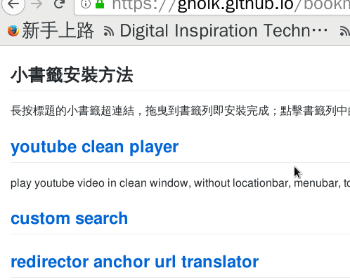

if you are in github.com, please go to github page of this repository or index.html to use drag drop to add bookmarklet, because github disable bookmarklet in README.md in github repository page.
長按標題的小書籤超連結，拖曳到書籤列即安裝完成； 點擊書籤列中的小書籤即可在當下頁面中執行。

懶得做 rss，請直接訂閱 github 自動依 git 歷史產生的 rss ， 或直接 watch github repository 用 email 收 github 通知。
若無指定，本頁面中所有腳本使用 GPLv3 授權。
all scripts in this page/repository are licensed under GPLv3.
play youtube video in clean window, without locationbar, menubar, toolbar, statusbar.
redirector anchor url translator
this bookmarklet will generate QR code image of current url, and open in the new tab.
逆時針方向旋轉方向錯誤的 facebook 浮動影片視窗 90° 。
取消網頁中禁用右鍵與防止選取文字的功能。 有些網頁會禁止反白選取文字，或是禁止右鍵， 這個小書籤可以強制允許右鍵與選取文字， 但不處理禁用 f12 或 ctrl-c 的網頁。
同上，但是油猴腳本版本。 如果常用網站會鎖右鍵和選取文字， 直接把該網站加入到 user include 即可。
某些網站會封鎖貼上功能，也就不能用右鍵貼上或是中鍵貼上， 也不能用 ctrl-v 貼上。 目前碰到的是某些信用卡網站，逼你一定要用鍵盤輸入，比較安全。 這個腳本可以啟用貼上功能。 如果碰到更多網站，就自己加入吧。
同上，不想裝油猴的可以用小書籤版。
靈感來自 gslin 的 press g to google 。
把搜尋引擎換成 duckduckgo 後，搜尋結果沒有 google 那麼好，
有時成果不是想要的，就會想直接換回用 google 搜尋。
gslin 就寫了一個在 duckduckgo 結果頁面上，
按鍵盤的 g 就會用同樣關鍵字以 google 搜尋的油猴腳本。
但因為 g 在 vimium 裡蠻常用到的，
主要就 gg 和 G 是捲動到頁首和頁尾，
所以我重寫了一個把 g 改成 b 的版本。
make mouse scroll flip page in hackmd slide mode. title is bookmarklet, below is grease monkey user.js: [hackmd scroll flip user.js] .
在 成功大學的 moodle 首頁登入後， 點擊該書籤，能自動下載所有課程中教授上傳的講義。 畢竟 moodle 上的資料不會永遠留著， 畢業後還是下載到自己電腦裡比較安心。
事前建議先把瀏覽器對 pdf 檔的動作設成儲存而非開啟， firefox: 偏好設定 > 應用程式 > 搜尋 pdf > 動作 > 儲存檔案 ， chromium: Settings > Privacy and security > Content settings > PDF documents > Download 。 另外 chromium 及 firefox 都建議設定預設下載的資料夾， 基本上就能全部自動下載，不會彈對話框。 有時一些檔案格式會無法直接下載，變成在新分頁開啟， 只能再右鍵另存新檔。
點擊書籤後會先彈出對話框要你輸入幾秒下載一個檔案， 建議是 1-3 秒，不要對計中的伺服器造成太大負擔； 輸入後就會開始一一下載。 如果要暫停或中斷，直接關掉分頁時會詢問是否要離開， 同時也會暫停不再下載新檔案。 若選擇停留就會繼續下載新檔案，確定離開就不會再下載新檔案； 下次再執行時會自動從上次下載到一半的課程繼續下載。
firefox 有個 bug，如果下載的檔案是純文字檔 txt， 會無法下載只會直接打開； 所以 firefox 的使用者我改用在新分頁開啟的形式， 防止原本 moodle 的頁面被結束掉。 chrome 好像會跳出大量下載的警告，記得勾允許。
用螢幕展示大字報。
原來是 debian 上的套件 screen message，有人重寫成網頁版本。 可以在瀏覽器中按 F11 進入全螢幕模式。
我是包成 data url 的形式， 但在 anchor 裡直接放 data url 好像不能直接點擊開啟。 但拖曳到書籤或右鍵加入書籤後，點擊還是可以運作。
一次將全班的成績全部輸入進交通大學 new e3 教學網站中的評分表格。
進入課程 > 成績管理 > 編輯成績，
網址應該是類似 https://e3new.nctu.edu.tw/theme/dcpc/grade/report/grader/editgrade.php?id=5566&edit=1 ，
其中 id=5566 換成該課程的 id。
點擊 e3 new grade 小書籤， 會彈出視窗提示使用者點擊要輸入的欄。 按 ok 後，在要評分的欄的任一學生的成績輸入框中點一下。
會再彈出一個輸入框要求輸入全班的成績， 請把全班的成績以一行一個分數， 或用空白分隔也可以，複製後貼到輸入框中，再按確定。
輸入的成績即會依順序填入該欄中的每個輸入框中。
讓 e3 new 的網頁標題顯示課程名稱、分頁名稱等資訊， 這樣就可以用瀏覽器的網址列搜尋快速找到某堂課的頁面。
讓使用者可以用 ctrl-v 貼上或是用拖放檔案的方式把檔案加到表單中的檔案欄位。
此為小書籤版本，在含有上傳檔案的表單欄位 <input type="file">
的網頁中執行此小書籤後，即可透過 ctrl-c 或其它貼上的方式，
將剪貼簿中的檔案，例如在網頁上右鍵複製的圖片，直接貼到表單中。
或者是用拖放的方式，將電腦中的檔案拖放到網頁中，
檔案即會被載入到表單中的檔案欄位。
如果網頁中含有多於一個的允許貼上檔案的表單，
則會貼上到網頁中第一個表單。
同上功能，但是油猴腳本 user.js 的版本， 好處是可以直接在指定的網址下執行，不用特別打開書籤欄執行小書籤。 此外相比小書籤版本，油猴版除了拖放電腦中的檔案， 也可以直接拖放其它網頁中的圖片。（由於油猴允許跨網域發送請求。） 預設本腳本只會在 google 以圖搜圖的頁面 啟用， 如果希望在其它常造訪的網站上啟用， 請在油猴腳本選單中將網站的網址加到腳本的使用者包含或使用者符合中： 油猴選單 (monkey menu) > paste to form file > 使用者指令稿選項 (user script options) > 使用者包含 (include) 或使用者符合 (match) 。
將目前網頁的 html 內容儲存為檔案， 主要是用在一些以 javascript 載入內容的網站。 因為直接用 wget curl 拿不到東西，只能在瀏覽器裡打開， 載入完內容後再用小書籤下載下來。
執行後可能會跳出下載視窗， 然後會彈出確認對話框，按確認就會清除暫存的 blob。 下載的檔名預設使用網頁的 title 而不是網址， 因為網址的重名問題有點嚴重。
用來編輯網頁的 meta description 標籤，
可以用來幫網頁加註解，然後再用上面的儲存頁面 html 保存，
或是用 web scrapebook 下載。
標註的內容會存在 meta[property="gholk:annotate"] 的 content 屬性裡。
會用既有的 description 當作草稿供編輯。
this script allow user to paste or drag file into the file field of form. you can:
this script is design for general propose.
it should work in any page containing file upload field
( <input type="file"> ).
if you are using any web-page with file upload field,
you can add its url to this script's userscript include/match list,
(monkey menu > paste to form file field > userscript option >
userscript include or userscript match)
so you can paste/drop file into the form.
(this script only run in google image search default.
you need to manually add other url.)
this user script will remove redirect link in google search result page, so you can copy the link directly on google search result page, and link to page without redirected by google.
in google search result page, the anchor of result will be rewrited to a link to google, then google redirect the link to the destination. it is troublesome if you want to coyp the link in context menu. this user script remove these redirect.
this user script will send browser notification when background facebook web page get notification. the notification will be sent only if fb is not foreground tab. if click the button in notification, userscript will switch to fb tab and open the page.
an easy html player helper script. add keyboard short cut for video playing, including arrow key right/left to seek/backward 5 second, and space to pause/play. for mouse, wheel can forward/backward about 5 second every tics, and click on video can pause/play the video. you need to add the url to user match of this script if you want to execute this script in that website.
簡單的播放器腳本，幫 html 的 vedio 標籤加上鍵盤快捷鍵， 包含左右鍵來倒退、前進 5 秒，還有空白鍵來暫停、播放。 滑鼠滾輪也可以倒退、前進大約 5 秒，點擊影片則可以暫停、播放。 本腳本預期可以在任何播放器中執行， 所以你可以將任意網站的網址加入此腳本的 使用者符合 列表中， 以在該網站的影片中加入鍵盤快捷鍵功能； 但某些已經定義過快捷鍵的網頁如 youtube bilibili 中可能會有衝突。 預設會在公視的 ptsplus.tv 中執行， 此外在公視的 勇者動畫系列 中會自動將畫質切為 480P， 因為勇者系列不知道為什麼，如果畫質設 auto 或太高， 都會有非常嚴重的卡頓。